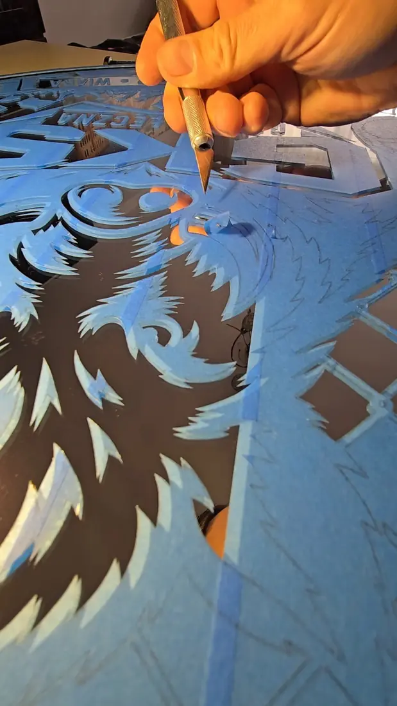
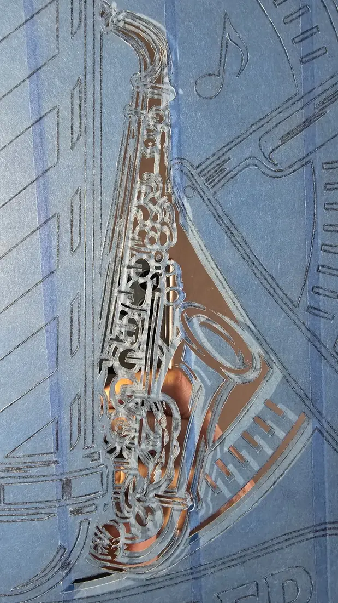

Lustro to
początek historii.
Matowienie szkła, ręczny grawer i autorskie wzory. Tworzę lustra, które nie tylko odbijają światło — pokazują charakter.
Moja twórczość.
Od symboli i logotypów po prace stworzone specjalnie dla jednej osoby. Kliknij realizację, aby zobaczyć więcej zdjęć.


Od pierwszej linii
do ostatniego detalu.
Każde lustro to wiele godzin przygotowań, wycinania i wykańczania wzoru. To właśnie ręczna praca odróżnia moje realizacje od seryjnych dekoracji.
Nie powielam.
Tworzę po swojemu.
ARTYSTA AKROBATA to połączenie artystycznej ciekawości z zamiłowaniem do precyzji. Moje prace powstają na lustrze, ale ich punktem wyjścia zawsze jest historia, symbol albo emocja.
Eksperymentuję z matowieniem, grawerowaniem i liternictwem. Łączę to, co tradycyjne, z nieoczywistymi motywami — od sportu i muzyki po personalizowane prezenty.
Twój pomysł.
Moja realizacja.
Masz pomysł na lustro z własnym motywem, dedykacją albo logotypem? Opowiedz o nim — ustalimy szczegóły indywidualnie.
Znajdź mnie na TikToku ↗